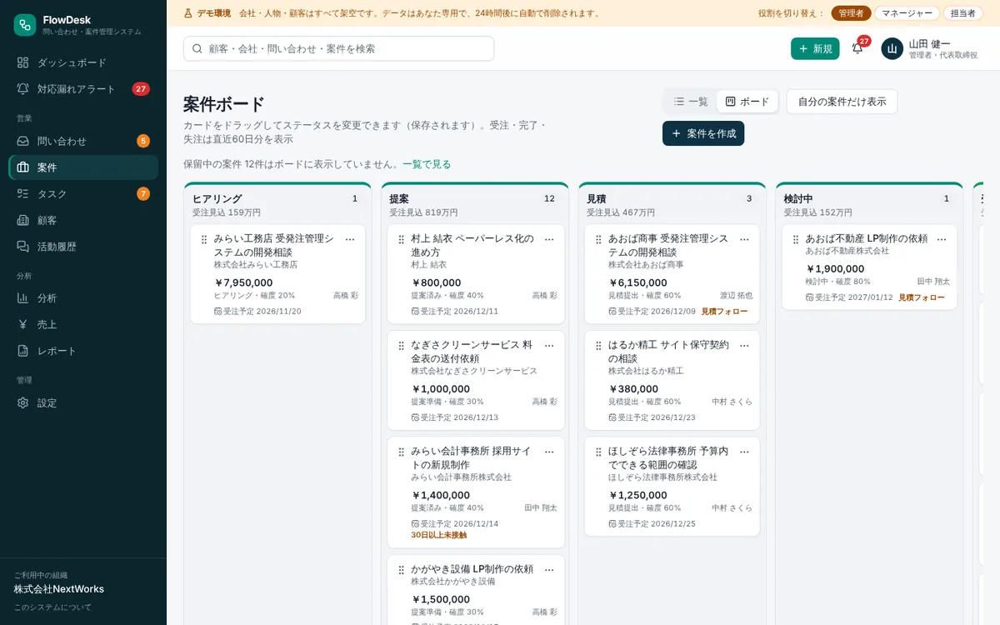
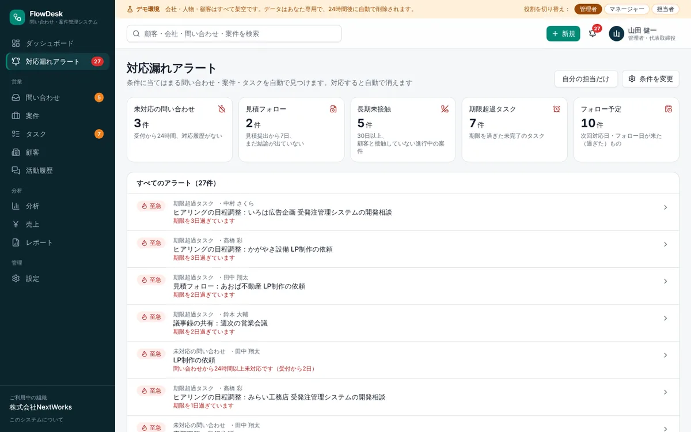
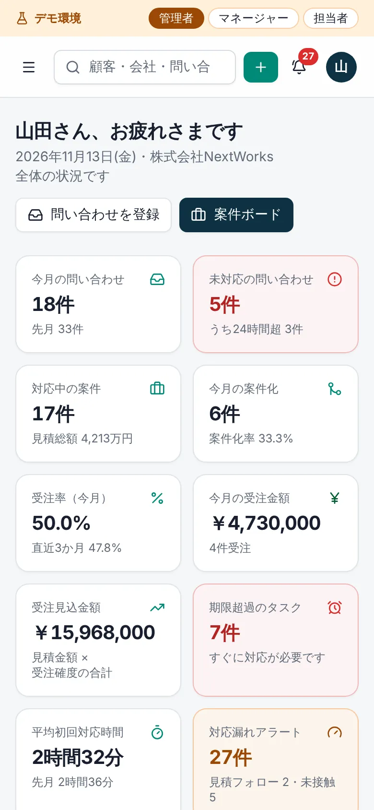
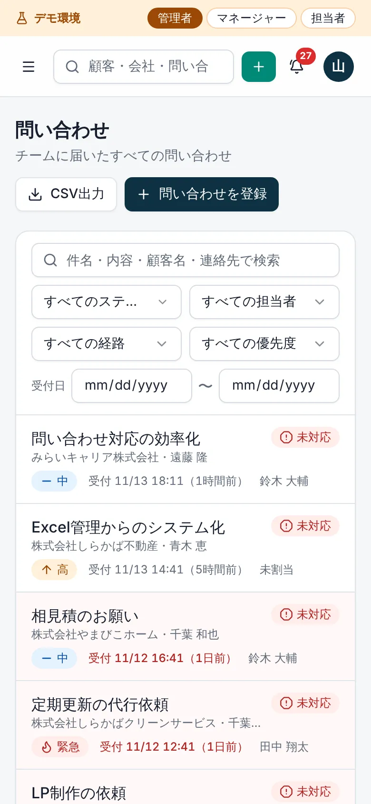
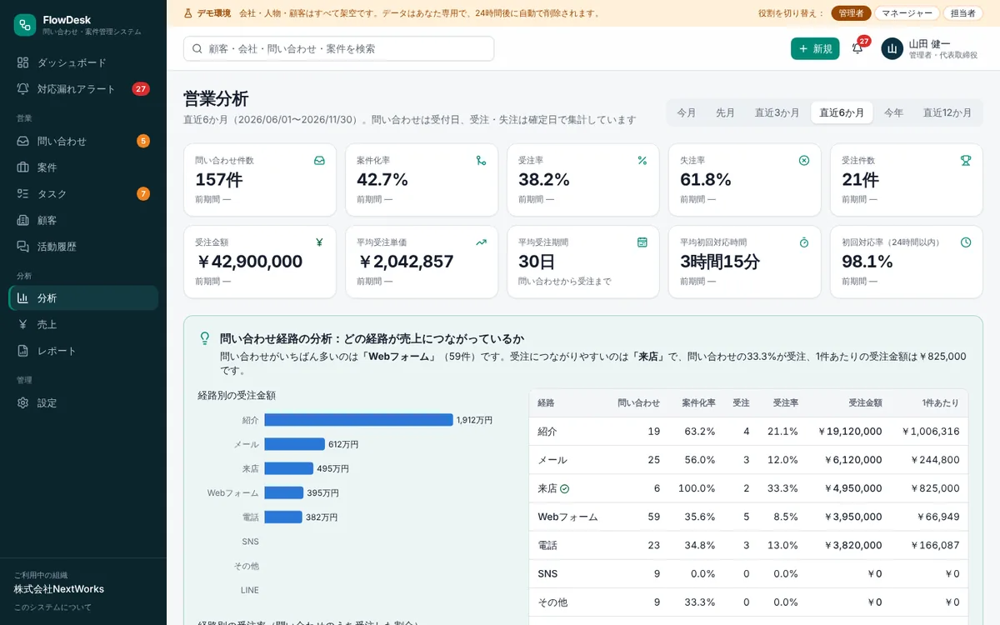

FlowDesk
バラバラに届く問い合わせを1か所に集め、対応漏れを防いで受注につなげる業務システムです。
- Client
- 問い合わせから仕事が始まる中小企業（Web制作会社・工務店・士業・修理業など）
- Users
- 管理者・マネージャー・一般担当者
（PC・スマートフォン） - Demo
- 登録不要。訪問者ごとに
専用のデモ組織を作成

Overview
プロジェクト概要
電話・メール・フォーム・LINE・紹介など、バラバラに届く問い合わせを1か所に集め、「誰が・いつまでに・何をするか」を見える化する、中小企業向けの問い合わせ・案件・タスク管理システムです。
問い合わせの受付から案件化・見積・受注・売上までを1つにつなげ、対応漏れは自動で知らせます。問い合わせ経路や案件ステータスなどの表示名は設定で変えられるため、業種を問わず使えるように設計しています。
Problem
想定した業務課題
- 問い合わせがメール・電話メモ・Excel に散らばり、返信漏れが起きる
- 見積を出したまま追いかけを忘れ、失注してしまう
- 案件の状況は、担当者に聞かないと分からない
- 月末に Excel で集計して、報告資料を手作業で作っている
- どの集客経路が売上につながっているのか、数字で説明できない
Solution
解決方法
- すべての経路の問い合わせを1つの一覧にまとめ、24時間以上未対応のものを自動で警告します。
- 見積を提出するとフォローのタスクを自動で作成し、7日たっても結論が出ていなければアラートで知らせます。
- 案件はボードでドラッグして更新し、ステータス・受注確度・受注見込金額が自動で連動します。
- ダッシュボード・営業分析・日次〜年間のレポートを自動で集計し、CSV にも出力できます。
- 経路ごとに「問い合わせ → 案件化 → 受注 → 受注金額」を並べ、どの経路が売上につながっているかを数字で比べられるようにしました。
Impact
導入効果の試算
従業員8名・月20〜30件の問い合わせがある会社を想定（アプリの紹介ページの試算と同じ条件で、合計は月30時間 → 月10時間）。作業ごとの内訳と、人件費の時間単価 2,500円（営業・事務担当）は、このページで置いた想定です。
- 削減できる作業時間
- 月 20時間月 30時間 → 月 10時間
- 年間の削減時間
- 240時間月 20時間 × 12か月
- 人件費に換算すると
- 約60万円 / 年月 約5.0万円（時間単価 2,500円）
| 作業（1か月あたり） | 導入前 | 導入後 | 削減 |
|---|---|---|---|
| 問い合わせの確認・転記メール・電話メモ・Excel を見て書き写す → 1つの一覧に登録、案件化はワンクリック | 9時間 | 3時間 | −6時間 |
| 案件の進捗の聞き取り担当者への確認 → 案件ボードで全員の状況と受注見込を確認 | 6時間 | 2時間 | −4時間 |
| Excel での集計月末の手集計 → 営業分析・売上画面で自動集計、CSV 出力 | 7時間 | 2時間 | −5時間 |
| 報告資料づくり毎月まる1日 → 月次レポートを印刷・PDF 保存 | 8時間 | 3時間 | −5時間 |
| 合計 | 30時間 | 10時間 | −20時間 |
※ 実際の導入実績ではなく、上の想定条件にもとづく試算です。実際の効果は、業務の内容や運用によって変わります。
Features
主要機能
- ダッシュボード
- 今月の問い合わせ・案件化率・受注率・受注見込金額などの指標と、「今日やること」を優先度の高い順に表示。
- 問い合わせ・案件化
- 経路・担当・優先度での絞り込み。ワンクリックで顧客・案件・タスクを作成し、内容と対応履歴を引き継ぎ。
- 案件ボード
- ヒアリング → 提案 → 見積 → 検討中 → 受注。ドラッグ・キーボード・メニューで移動し、失注時は理由を記録。
- 対応漏れアラート
- 24時間未対応・見積から7日・30日未接触・期限超過タスク・フォロー予定日を自動で検出。日数は設定で変更可能。
- 顧客・タスク・対応履歴
- 顧客ごとのタイムラインと累計売上、CSV の取り込み（Shift_JIS 対応）。今日・今週・期限超過のタスク一覧。
- 営業分析・レポート
- 経路別・担当者別・月別の分析と KPI 10種。日次〜年間のレポートは印刷・PDF 保存に対応。
Screens
スクリーンショット





Tech
使用技術
- Next.js 16（App Router・Server Components・Server Actions）
- React 19
- TypeScript
- PostgreSQL 16（Neon）
- Tailwind CSS 4
- shadcn/ui
- dnd-kit
- Recharts
- React Hook Form・Zod
- Vitest
- Playwright
- Vercel
- すべての業務データに組織IDを持たせ、PostgreSQL の行レベルセキュリティ（RLS）で会社ごとにデータを分けています。
- 権限は画面・サーバー・データベースの3段で確認しています。一般担当者は自分の担当分だけを扱えます。
- 案件化は1つのトランザクションで、顧客・案件の作成と対応履歴・タスクの引き継ぎをまとめて行います。金額は円の整数で保持しています。
Links
デモ・ソースコード
登録は不要です。ログイン画面の「管理者として体験」「マネージャーとして体験」「一般担当者として体験」を押すと、訪問者ごとに専用のデモ組織（架空の会社「株式会社NextWorks」の約半年分のデータ）が作られ、24時間後に自動で削除されます。画面上部のバナーから役割を切り替えられます。